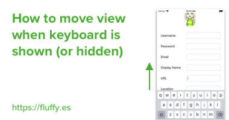

Thanks a lot for the write-up. I really appreciate the clarity and conciseness of the explanations. I was just wondering, though -- if I'm getting this right, it does mean that if in iOS 13 I override some of the methods of the SceneDelegate, I have to apply the same overrides in AppDelegate for iOS 12 and lower because the SceneDelegate is not present at all, right?
Also on Fluffy

Move view when keyboard is shown …
Just want the code to move the view up? Just want the code to scroll the …
Open app in specific view when push …
Note: If your app project has SceneDelegate.swift (created in Xcode 11, …
How to use Static Table View in View …
You want to add a table view to show static content, and then Bam! Xcode …
Open app in specific view when push …
Say you have an app and want to redirect user to a specific view when a …
Introduction to supporting Dynamic …
Table of contents : Default dynamic type text styles Use Accessbility …
How to use scroll view in Interface Builder / …
Table of contents:Structure of scroll viewContent Layout guide and Frame Layout …
Replicating Twitter Slide Menu - Part 1 / 2
In this post, we will breakdown, analyze the Slide Menu mechanism …
How to debug app which got launched …
There might be occassion that your app got launched by user tapping push …